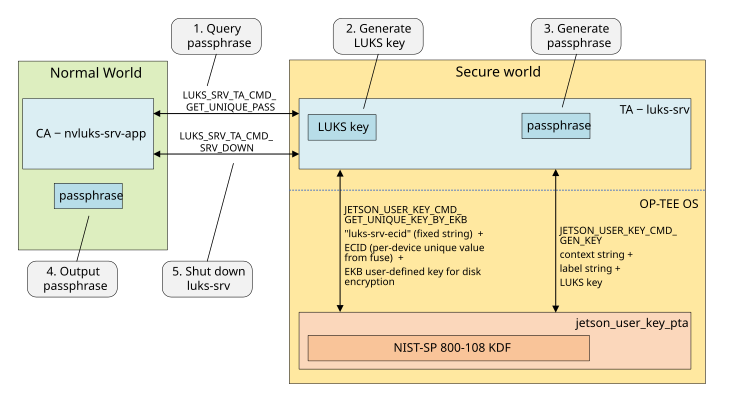
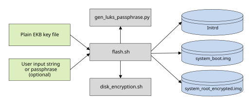
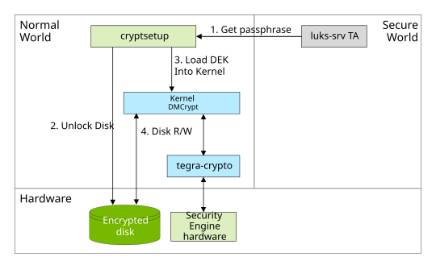
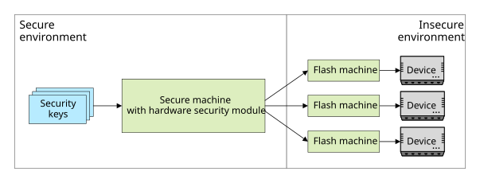

Disk Encryption#
Applies to the Jetson AGX Orin, the Jetson Orin NX series, and the Jetson Orin Nano series.
Disk encryption encrypts a whole disk or partition to protect the data
it contains. NVIDIA® Jetson™ Linux offers disk encryption that is based on
Linux Unified Key Setup (LUKS)
Data-at-rest encryption,
It provides a standard disk format that stores all necessary setup information on the disk in the partition header. The passphrase in the Jetson OP-TEE
luks-srv Trusted Application (TA) supports disk encryption functionality with one-time
passphrase generation during boot time to unlock the encrypted disk.
Quick Guide#
The following section provides information about how to enable disk encryption.
Set up the host machine.
We recommend Ubuntu 22.04.
Ensure that you have the following packages:
$ sudo apt-get install python3-cryptography python3-cffi-backend libxml2-utils $ sudo apt-get install cryptsetup python3-pycryptodome python3-crypto
Enable disk encryption.
Refer to Layout of an Encrypted Disk for an example of a layout configuration.
Note
encrypted=”true” must be set to enable disk encryption for a specific partition.
Prepare disk encryption key and eks_<platform>.img.
Note
To replace the sample key, refer to
Tool for EKB Generationchapter in OP-TEE.Set environment ENC_ROOTFS=1 in flash.sh command line to generate and flash disk encryption enabled rootfs/UDA partition images:
Enable rootfs disk encryption on Orin AGX, you can refer to How to Create an Encrypted Rootfs on the Host.
Enable rootfs disk encryption on Orin NX and Orin Nano series, you can refer to How to Flash an Encrypted Rootfs to an External Storage Device.
Enable UDA disk encryption, you can refer to Enabling Disk Encryption Only for UDA.
Note
ENC_ROOTFS=1 must be provided to enable disk encryption.
Device must be connected to the host machine.
(Optional) To enable disk encryption for dynamically created partitions, you can refer to Enabling Disk Encryption for Dynamically Created Partitions.
(Optional) To enable disk encryption for manufacturing, you can refer to Manufacturing process.
Here is an example that enables disk encryption for rootfs on AGX Orin:
Modify the
Linux_for_Tegra/bootloader/generic/cfg/flash_t234_qspi_sdmmc_enc_rfs.xmlfile and set the attributeencryptedto true in APP_ENC.Generate disk_enc.key which is aligned with the key
sym_key2in eks_<platform>.img.Use the command
sudo ROOTFS_ENC=1 ./flash.sh -i "./disk_enc.key" jetson-agx-orin-devkit internalto enable disk encryption.
Setup Preparation#
Jetson Linux uses cryptsetup, a LUKS user space command line utility, to
set up and unlock an encrypted disk. It uses the DMCrypt kernel module
as its backend. The utility sets up the encrypted disk as a LUKS
partition and configures it with a passphrase.
The DMCrypt kernel module is the standard device-mapper interface for
encryption functionality in the Linux kernel. It sits between the disk
driver and the file system, where it encrypts and decrypts data blocks
transparently.
For more information about cryptsetup and DMCrypt, see the
cryptsetup project
and the
DMCrypt documentation,
both hosted by GitLab.
Details of Operation#
Two types of keys are used for disk encryption:
The master key, also known as the Disk Encryption Key (DEK). This key is used for data encryption or decryption when data is transferred between the file system and the disk.
The master key is generated by
cryptsetup. The default and recommended source for data used to generate the key is/dev/random. The key resides in the LUKS header, and is encrypted by the key derived from the passphrase.The passphrase or password is an input string or pattern supplied by the user to set up disk encryption and lock the disk. The same input is used to decrypt and unlock data stored on the disk.
The passphrase is generated with help from two applications:
luks-srv: A trusted application (TA) that utilizes the key generating service fromjetson_user_key_pta. Using that service it can derive a LUKS key, which is the root key for deriving the passphrase.This block shows the service interfaces provided by
luks-srv:/* * Each trusted app UUID should have a unique UUID that is * generated from a UUID generator such as * https://www.uuidgenerator.net/ * * UUID : {b83d14a8-7128-49df-9624-35f14f65ca6c} */ #define LUKS_SRV_TA_UUID \ { 0xb83d14a8, 0x7128, 0x49df, \ { 0x96, 0x24, 0x35, 0xf1, 0x4f, 0x65, 0xca, 0x6c } } #define LUKS_SRV_CONTEXT_STR_LEN 40 #define LUKS_SRV_PASSPHRASE_LEN 16 /* * LUKS_SRV_TA_CMD_GET_UNIQUE_PASS - Get unique passphrase * param[0] in (memref) context string, length * param[1] out (memref) passphrase, size * param[2] unused * param[3] unused */ #define LUKS_SRV_TA_CMD_GET_UNIQUE_PASS 0 /* * LUKS_SRV_TA_CMD_SRV_DOWN - Turn off the service * param[0] unused * param[1] unused * param[2] unused * param[3] unused */ #define LUKS_SRV_TA_CMD_SRV_DOWN 1
nvluks-srv-app: A Client Application (CA) in the normal (non-secure) world that communicates withluks-srvto retrieve the passphrase.cryptsetupuses the passphrase to unlock the encrypted disk.
The cryptographic algorithm used for disk encryption is AES-XTS, with a key length of 256 bits. This mode of operation makes the encrypted data look completely random, minimizing the potential for attack. The entire key derivation process is performed in the secure world.
The following diagram outlines the overall process:

The
nvluks-srv-appCA queries the per-device unique passphrase via the command interfaceLUKS_SRV_TA_CMD_GET_UNIQUE_PASS.When the
luks-srvTA receives the command, it sends a request tojetson_user_key_ptato generate a per-device unique LUKS key.jetson_user_key_ptauses the NIST-SP 800-108 KDF to derive a new key from the EKB disk encryption key.The KDF’s input parameters are the fixed label string
"luks-srv-ecid"and the ECID as the context string.The TA uses the LUKS key to generate a passphrase. The passphrase is generated with the same KDF as the LUKS key.
The KDF’s context string parameter is the disk UUID, so no user interaction is needed to create the encrypted disk image or to unlock it at boot time. The fixed label string is
"luks-srv-passphrase-unique".The TA returns the output passphrase.
Send the
LUKS_SRV_TA_CMD_SRV_DOWNcommand to shut the service down. This ensures that passphrase generation is done only once.
The generation process uses this key derivation function (KDF) to generate a per-device unique LUKS key or a generic key:
key = NIST-SP-800-108(inkey, labelstring, contextstring)
Where:
NIST-SP-800-108 is a key derivation function (KDF) recommended by the National Institute of Standards and Technology algorithm for key derivation using pseudorandom functions..
in-key is the key source used to derive a new key.
label-string identifies the purpose of the key to be generated. In the reference implementation label-string is a fixed value defined by the TA.
context-string is a string that contains information related to the derived key, and which the KDF uses as a parameter for key generation. In the reference implementation the default context string is the disk’s UUID, but you can change this by modifying the TA.
To unlock the encrypted disk with nvluks-srv-app, enter these commands:
#!/bin/bash
# Using "cryptsetup" and "nvluks-srv-app" to unlock the encrypted device:
nvluks-srv-app --context-string "${DISK_UUID}" --get-unique-pass | cryptsetup -c \
luksOpen <luks_device> <DM_name>
Where:
<luks_device>is the device name of the encrypted disk, e.g./dev/mmcblk1.<DM_name>is the mapping name after the encrypted disk is unlocked, for example,/dev/mapper/DM_name.
See Basic Flashing Script Usage in Flashing Support for more information.
Note
To prevent any form of attack from extracting the passphrase at boot time (e.g. in the initrd), use the command type LUKS_SRV_TA_CMD_SRV_DOWN. This command instructs luks-srv not to respond to a LUKS_GET command (to get the passphrase) until reboot. This step is crucial to ensure the security of your design.
The Threat Model#
The purpose of disk encryption is to prevent an attack from stealing or tampering with data on the disk. Even if the disk is physically unmounted (or, in the case of an internal device such as an eMMC, is removed from the device), the data cannot be exposed.
Disk encryption cannot protect against the following types of threat:
A background process or daemon that has a security hole. An attacker may be able to use the hole to gain control of the process and access the disk.
Theft or leakage of the login ID and password. An attacker can use these credentials to log in to the device and access the disk.
Disk Encryption Implementation in Jetson Linux#
Jetson Linux provides a reference implementation of disk encryption which fulfills the security requirements of many use cases. If your use case’s requirements are different, you can modify it or use it as a model for implementing your own.
Layout of an Encrypted Disk#
Because Bootloader cannot read encrypted files, disk encryption
requires Jetson Linux to divide a “naive” system’s APP partition in two:
The unencrypted
APPpartition contains the/bootbranch of the file system, including the kernel, DTB, and initrd images.A new, encrypted
APP_ENCpartition contains the rest of the file system.
Here is an example of the APP partition definition for a system on
which disk encryption is not enabled. You can find a definition like
this one in the Jetson Linux BSP partition configuration files, for example:
Linux_for_Tegra/bootloader/generic/cfg/flash_t234_qspi_sdmmc.xml for an
NVIDIA® Jetson AGX Orin™ series device booting from SDMMC memory:
<partition name="APP" type="data">
<allocation_policy> sequential </allocation_policy>
<filesystem_type> basic </filesystem_type>
<size> APPSIZE </size>
<file_system_attribute> 0 </file_system_attribute>
<allocation_attribute> 0x808 </allocation_attribute>
<align_boundary> 16384 </align_boundary>
<percent_reserved> 0 </percent_reserved>
<unique_guid> APPUUID </unique_guid>
<filename> APPFILE </filename>
<description> **Required.** Contains the rootfs. This partition must be assigned
the "1" for id as it is physically put to the end of the device, so that it
can be accessed as the fixed known special device `/dev/mmcblk0p1`. </description>
</partition>
The following example shows how disk encryption separates APP into two partitions. Each partition’s differences from the preceding example are highlighted in red, but the elements in the definitions are the same. You can find the file in the Jetson Linux BSP, for example, Linux_for_Tegra/bootloader/generic/cfg/flash_t234_qspi_sdmmc_enc_rfs.xml for the device mentioned above:
<partition name="APP" id="1" type="data">
<allocation_policy> sequential </allocation_policy>
<filesystem_type> basic </filesystem_type>
<size> 419430400 </size>
<file_system_attribute> 0 </file_system_attribute>
<allocation_attribute> 0x8 </allocation_attribute>
<percent_reserved> 0 </percent_reserved>
<align_boundary> 16384 </align_boundary>
<unique_guid> APPUUID </unique_guid>
<filename> system_boot.img </filename>
<description> **Required.** Contains the boot partition. This partition must be defined
after `primary_GPT` so that it can be accessed as the fixed known special device
`/dev/mmcblk0p1`. </description>
</partition>
<partition name="APP_ENC" id="2" type="data" encrypted="true" reencrypt="false">
<allocation_policy> sequential </allocation_policy>
<filesystem_type> basic </filesystem_type>
<size> APP_ENC_SIZE </size>
<file_system_attribute> 0 </file_system_attribute>
<allocation_attribute> 0x8 </allocation_attribute>
<percent_reserved> 0 </percent_reserved>
<align_boundary> 16384 </align_boundary>
<unique_guid> APP_ENC_UUID </unique_guid>
<filename> system_root_encrypted.img </filename>
<description> **Required.** Contains the encrypted root partition("/"). </description>
</partition>
Notice that the <size> element of APP specifies an actual number, but
the <size> element of APP_ENC specifies a symbol, APP_ENC_SIZE. Later,
the value of APP_ENC_SIZE must be calculated by subtracting the size of
APP from the total rootfs size.
Each partition’s <filename> element specifies the actual file name of
the appropriate disk image (not a symbol that is resolved to the file
name during flashing).
The partitions’ <unique_guid> elements specify the partitions’ UUIDs,
APPUUID and APP_ENC_UUID respectively. Both symbols are translated to
real UUID numbers by the image generation process.
The APP_ENC partition’s encrypted attribute indicates that the partition
is encrypted.
With the new partition layout, new parameters are needed in the board
configuration file to enable disk encryption and apply the new partition
layout file. Use the appropriate board configuration file for your
device, for example, Linux_for_Tegra/p3737-0000-p3701-0000.conf.common for a Jetson AGX
Orin module in a Jetson AGX Orin Developer Kit. The disk_enc_enable
setting indicates that disk encryption is enabled, and EMMC_CFG
identifies the partition layout file to use:
disk_enc_enable=1;
EMMC_CFG=flash_l4t_t234_qspi_sdmmc_enc_rfs.xml;
The flash tool uses the board configuration file to generate file system images and flash them onto the device.
How to Create File System Images#
When you create file system images to support booting with an encrypted disk, keep the following points in mind:
The
bootargkernel command line’s root parameter must use the disk’s UUID (not the partition’s UUID specified in the partition definition) to identify the root disk if the device is to boot from an encrypted root disk.The
crypttabfile in initrd includes the mount point and the device name of the encrypted disk. It may be a real device name like/dev/mmcblk0p1or the UUID of the disk.The
fstabfile in the rootfs is updated with the/bootdirectory in theAPPpartition, which helps the automount process mount the partition at boot time.
Creating an Encrypted Rootfs on the Host#
The rootfs is generated on the host by flash.sh. The diagram below shows
the elements of the rootfs (in green), the utilities used to generate it
(in gray), and the input (in blue).

The input has two parts: the plain key file of the EKB key used for disk encryption, and an input string used to generate the passphrase. By default, the input string is the UUID of the encrypted disk. You can modify the script that generates the rootfs to let user to enter their own string. You must change the initrd accordingly to make it use the user-supplied string.
You must generate the rootfs on a secure system, that is, a secure host
computer equipped with a Hardware Security Module (HSM). The HSM is
used for key generation and management to secure key assets and safe
transport to the factory floor. This is necessary to ensure that the
keys cannot be leaked to an unsecure system on the production line.
flash.sh invokes two helper scripts to generate the passphrase and the
disk images:
gen_luks_passphrase.pyfollows the same process as thehwkey-agentandluks-srvTAs to derive the LUKS key, and uses the key to generate the passphrase.disk_encryption.shoutputs the disk images for the initrd,system_boot.img, andsystem_root_encrypted.img.
The Jetson Linux reference implementation only generates per-device encrypted disk images. Use it as a starting point to develop a script that is suited to your use case and production environment.
Flashing the encrypted rootfs on the host with flash.sh for the Jetson AGX Orin requires an update of the Linux_for_Tegra/bootloader/eks_<platform>.img.
Decompress the OP-TEE source package and run
example.shin it to generate a test EKS image(In real production scenario, you must generate your own EKS image using your own keys):$ cd optee/samples/hwkey-agent/host/tool/gen_ekb/ # Take a look at example.sh and you need to update all keys accordingly $ ./example.sh
Copy the
eks_<platform>.imggenerated by example.sh to theLinux_for_Tegra/bootloaderfolder and overwrite theeks_<platform>.imgfile.
The
Tool for EKB Generationchapter in OP-TEE has detailed descriptions about EKS image generation.
Use
flash.shto generate and flash the encrypted rootfs:# The disk encryption key in the EKB partition: # This key is defined in example.sh too to generate the EKS image $ echo <disk_enc_key> > disk_enc.key $ sudo ROOTFS_ENC=1 ./flash.sh -i "./disk_enc.key" <board> <rootdev>
Where:
<board>is the value of$(BOARD)for your Jetson module and configuration, as shown in the table in the section Jetson Modules and Configurations in the topic Quick Start.<rootdev>is the partition where the root file system is to be flashed.
The flash.sh command line option -i specifies the key to be used for
disk encryption. The reference implementation described above uses the
EKB key. NVIDIA recommends that you customize the script to use a
different key source for the sake of security. The keys in the example above
are only for reference and testing purposes so that you should not use them as
given. When you change the key, change the EKS partition accordingly,
and review the overall key and passphrase generation flow to be sure
that everything works correctly.
How to Flash an Encrypted Rootfs to an External Storage Device#
To flash an encrypted rootfs generated by flash.sh to an external
storage device, use l4t_initrd_flash.sh (also known as “the initrd
flashing tool”). (See Flashing with initrd
in Flashing Support).
Here is an example of commands that use l4t_initrd_flash.sh to
flash an encrypted rootfs to an NVMe SSD attached to a Jetson Orin NX
series device:
$ cd Linux_for_Tegra
$ sudo ./tools/kernel_flash/l4t_initrd_flash.sh --network usb0 \
--showlogs -p "-c bootloader/generic/cfg/flash_t234_qspi.xml" \
--no-flash jetson-orin-nano-devkit internal
$ sudo ROOTFS_ENC=1 ./tools/kernel_flash/l4t_initrd_flash.sh --network usb0 \
--showlogs --no-flash --external-device nvme0n1p1 -S 16GiB \
-c ./tools/kernel_flash/flash_l4t_t234_nvme_rootfs_enc.xml \
--external-only --append -i ./disk_enc.key jetson-orin-nano-devkit external
$ sudo ./tools/kernel_flash/l4t_initrd_flash.sh --network usb0 --showlogs --flash-only
Tools and instructions for flashing an encrypted rootfs with initrd may
be found in the directory /Linux_for_Tegra/tools/kernel_flash/. For more
detailed information, see README_initrd_flash.txt in that directory.
To Enhance initrd to Unlock an Encrypted Rootfs#
To boot from an encrypted root file system, you need an initrd image
which includes the necessary utilities (e.g. cryptsetup) and scripts to
set up the root device after the kernel is initialized, but before the
rest of the operating system is booted. The flashing images must contain the APP
partition, which contains the /boot branch of the rootfs (unencrypted),
and the APP_ENC partition, which contains the rest of the rootfs
(encrypted).
The init script in the initrd follows these steps to check the encrypted
root device, unlock it, and mount it:
Verify that the
rootparameter specifies the same device as the root device setting in/etc/crypttab.Verify that the root device is a LUKS device.
Unlock the encrypted root device with the per-device unique passphrase.
Mount the root device.
Command the
luks-srvTA not to respond to further passphrase requests until reboot.
To modify initrd to unlock additional encrypted file systems#
The file /etc/crypttab, kept in initrd, describes encrypted block
devices that are set up during system boot. Each line of this file has
the form:
<volume-name> UUID=<uuid>
Where:
<volume-name>is the name of a volume in which decrypted data is to be placed. Its block device is set up in/dev/mapper/.<volume-name>must be unique across all lines in the file.<uuid>is the UUID of the underlying block device containing encrypted data.
Here are two examples of entries in /etc/crypttab:
crypt_root UUID=b5600ed6-69e7-42b8-bee3-ecfdd12649d1
crypt_UDA UUID=cf6fa01d-1127-4612-9992-2f6db77385e0
If your device has several encrypted file systems, you must add a line
to /etc/crypttab for each one you want Bootloader to unlock.
This is an example of how to unlock an encrypted file system:
Enter this command to find the UUID of the encrypted file system:
$ sudo blkid | grep TYPE="crypto_LUKS"
This command line displays a line of output for each encrypted disk that includes the disk’s UUID. Such a line looks like this:
/dev/mmcblk0p43: UUID="5096aa4d-6590-429b-9295-a1fe041b8fa3" TYPE="crypto_LUKS" PARTLABEL="UDA" PARTUUID="2b23da7f-2f18-44bf-9e1d-6e3a3a39ad21"
Unpack the initrd. For instructions, see Modifying Jetson RAM Disk in Flashing Support.
Add a line to
/etc/crypttabfor each encrypted file system that you want to unlock at subsequent reboots. The line specifies the UUID of the file system to be unlocked, as in this example:crypt_fs UUID="5096aa4d-6590-429b-9295-a1fe041b8fa3"
Repackage the initrd and store it in
/boot, replacing the initrd that was originally there.Create a subdirectory in
/mntin which initrd can mount each unlocked file system during the initialization process. For the sake of simplicity, NVIDIA recommends giving each subdirectory the same name as the volume to be mounted there. For the volume specified in step 3, the subdirectory would be namedcrypt_fs:$ mkdir -p /mnt/crypt_fs
Bootloader unlocks your encrypted file system at each subsequent reboot.
Enabling Disk Encryption Only for UDA#
Disk encryption for UDA partition only can be supported by disabling rootfs disk encryption.
To disable disk encryption on rootfs:
In the layout configuration file, set the encrypted attribute of
APP_ENCto false.Refer to Layout of an Encrypted Disk for an example of a layout configuration.
To complete the process, complete the steps in How to Create an Encrypted Rootfs on the Host.
Note
ROOTFS_ENC=1 is needed to enable disk encryption.
encrypted attribute for each partition in layout configuration file is used to enable or disable disk encryption for the partition.
Enabling Disk Encryption for Dynamically Created Partitions#
To encrypt a specific partition at run time, use the /usr/sbin/gen_luks.sh tool. This tool updates the /opt/nvidia/cryptluks file in rootfs and describes dynamically encrypted block devices that are set up when the system boots.
Here is an example that shows you how to use this tool to dynamically encrypt /dev/mmcblk0p16:
To find the the device that needs to be encrypted, run the following command:
$ sudo blkid
This command displays and selects the device you want to encrypt. For example:
/dev/mmcblk0p16: PARTLABEL="DATA" PARTUUID="1dd895ca-8815-4069-8966-9f796259c13c"
Note
Ensure that you back up all your data on this device, because the data will be wiped out after disk encryption is enabled.
To create an encrypted partition
crypt_DATAfrom/dev/mmcblk0p16, rungen_luks.sh:$ sudo gen_luks.sh /dev/mmcblk0p16 crypt_DATA
When gen_luks.sh prompts you about continuing this process and wiping out all data on
/dev/mmcblk0p16, select one of the following options:- **YES**: formats ``/dev/mmcblk0p16``. - If you do not enter **YES**, the process is stopped.
When gen_luks.sh prompts you about using
ext4as the file system type for the encrypted partitioncrypt_DATA, select one of the following options:YES: formats
/dev/mmcblk0p16.If you do not enter YES, formats
/mnt/crypt_DATAto any file system type you want after rebooting the device.
To complete the encrypting process for
/dev/mmcblk0p16, when prompted to reboot the system, select one of the following options:YES: reboots the system and the encrypted device is created at
/dev/mapper/crypt_DATA.If you do not enter YES, the system reboots to enable disk encryption for this partition.
After device reboots,
/dev/mapper/crypt_DATAis created, unlocked, and mounted at/mnt/crypt_DATA.
Modifying /opt/nvidia/cryptluks to Unlock Previously Created and Encrypted File Systems#
Each line of /opt/nvidia/cryptluks has the following form:
<device-name> <volume-name> UUID=<uuid> <file-system-type>
Where:
<device-name>is the device name of the encrypted disk, for example,/dev/mmcblk0p16. This name must be unique across all lines in the file.<volume-name>is the name of a volume in which decrypted data is to be placed. Its block device is set up in/dev/mapper/. This name must be unique across all lines in the file.<uuid>is the UUID of the underlying block device that contains the encrypted data.
<file-system-type>is the Linux file system type of this encrypted device. To automatically format and mount the encrypted device, onlyext4is supported ininitrd.
Here is an example of an entry in /opt/nvidia/cryptluks:
/dev/mmcblk0p16 crypt_DATA UUID=4fb81966-a146-4626-aa14-c221d7715349 ext4
If /opt/nvidia/cryptluks is lost, complete the following steps to recover it:
To find the UUID of the encrypted file system, run the following command:
$ sudo blkid | grep TYPE="crypto_LUKS"
This command line displays a line of output for each encrypted disk that includes the disk’s UUID. Here is an example:
/dev/mmcblk0p16: UUID="4fb81966-a146-4626-aa14-c221d7715349" TYPE="crypto_LUKS" PARTLABEL="UDA" PARTUUID="1dd895ca-8815-4069-8966-9f796259c13c"
Add a line to
/opt/nvidia/cryptluksfor each dynamically encrypted file system that you want to unlock at subsequent reboots. The line specifies the UUID of the file system to be unlocked, for example:/dev/mmcblk0p16 crypt_DATA UUID=4fb81966-a146-4626-aa14-c221d7715349 ext4
Note
You can always use
ext4for the last field. When the encrypted disk has been previous unlocked and mounted successfully,ext4is not used.Reboot the device. The encrypted disk will be unlocked and mounted at
/mnt/crypt_DATA.
Summary#
The following diagram shows the overall flow of the encrypted disk unlocking process.

The steps of the process are:
nvluks-srv-appqueries the hardware-based passphrase from the Trustyluks-srvTA and pass it to thecryptsetuputility.cryptsetupunlocks the disk and decrypts the disk encryption key (DEK) with the passphrase.cryptsetupinvokes theDMCryptkernel module and loads the key into the kernel.DMCryptuses thetegra-cryptodriver, which uses Security Engine (SE) hardware for data encryption and decryption.Subsequent disk I/O is routed through
DMCrypt, which decrypts and encrypts data as it reads and writes.
Manufacturing process#
The following diagram illustrates the post-development manufacturing process for a Jetson-based device.

All disk images and blobs to be flashed onto production devices must be generated on a secure system. The HSM holds all of the security keys needed in the manufacturing process. If more than one production device is to be flashed at a time, the security machine must be able to deploy images to other systems (flashing machines) for flashing devices.
To support mass flash, the images are generated one time on the security machine for all devices with a generic key, and the key will be replaced by a per-device unique key during the first boot.
Creating Encrypted Images with a Generic Key#
To create encrypted images with a generic key, run the l4t_initrd_flash.sh script, which is also known as the initrd
flashing tool (refer to Flashing with initrd
in Flashing Support).
For example:
Jetson AGX Orin 32GB target:
$ cd Linux_for_Tegra $ sudo BOARDID=3701 BOARDSKU=0004 ROOTFS_ENC=1 ./tools/kernel_flash/l4t_initrd_flash.sh \ --network usb0 -i ./disk_enc.key -p "--generic-passphrase" --massflash 5 --no-flash \ jetson-agx-orin-devkit internalNote
For AGX Orin 64GB, replace BOARDSKU=0004 with BOARDSKU=0005.
Jetson Orin NX 16GB target:
$ cd Linux_for_Tegra $ sudo BOARDID=3767 BOARDSKU=0000 ./tools/kernel_flash/l4t_initrd_flash.sh \ --network usb0 -p "-c bootloader/generic/cfg/flash_t234_qspi.xml" \ --no-flash \ jetson-orin-nano-devkit internal $ sudo BOARDID=3767 BOARDSKU=0000 ROOTFS_ENC=1 \ ./tools/kernel_flash/l4t_initrd_flash.sh \ --network usb0 --showlogs --no-flash --external-device nvme0n1p1 \ -S 16GiB -c ./tools/kernel_flash/flash_l4t_t234_nvme_rootfs_enc.xml \ --external-only --append -i ./disk_enc.key ``-p "--generic-passphrase"`` \ --massflash 5 jetson-orin-nano-devkit externalNote
For the following boards, replace BOARDSKU=0000 with one of the following options: - Orin NX 8GB: BOARDSKU=0001 - Orin Nano 8GB: BOARDSKU=0003 - Orin Nano 4GB: BOARDSKU=0004
Images encrypted by the generic key are generated and packaged in the mfi_<target-board>.tar.gz file, which sends the images to the factory floor, and places connected devices in RCM mode to flash the devices with the following command:
$ sudo tar xpfv mfi_<target-board>.tar.gz.
$ cd mfi_<target-board>
$ sudo ./tools/kernel_flash/l4t_initrd_flash.sh --flash-only --massflash 5
Replacing the Generic Key with the Per-device Unique Key at First Boot#
To replace generic key with a per-device unique key, run the init script in the initrd:
Note
This procedure checks whether the device is encrypted by the generic key, adds a unique key, and removes the generic key.
Verify that the device name parameter specifies the same device as the device setting in
/etc/crypttab.Verify the version of cryptsetup utility.
Verify that the device is a LUKS device.
Verify that the device is encrypted by a generic key.
If Yes, replace the generic key with the per-device unique key.
If No, skip the key replacement process.
Unlock the encrypted device with the per-device unique passphrase.
Mount the device.
Command the
luks-srvTA to not respond to additional passphrase requests until the reboot.
(Optional) Encrypting the Disks Again#
After replacing the generic key with a per-device unique key, the disk encryption key can also be optionally regenerated at the first boot. After the key has been regenerated, the device is protected by a new key.
Note
This process encrypts the device again with a randomly generated key, and this key is typically a device unique key. Without this step, although the key that is used to encrypt the encryption key has been replaced, the device encryption key remains unchanged.
To enable re-encryption feature for a disk, in the layout configuration file, set the encrypted and reencrypt attribute of the <disk_name> to true.
Here is an example of the UDA partition definition for an UDA on which disk encryption and re-encryption are not enabled. You can find a definition like
this one in the Jetson Linux BSP partition configuration files, for example, Linux_for_Tegra/bootloader/generic/cfg/flash_l4t_t234_qspi_sdmmc_enc_rfs.xml:
From
<partition name="UDA" type="data" encrypted="false" reencrypt="false"> <allocation_policy> sequential </allocation_policy> <filesystem_type> basic </filesystem_type> <size> 419430400 </size> <file_system_attribute> 0 </file_system_attribute> <allocation_attribute> 0x8 </allocation_attribute> <align_boundary> 16384 </align_boundary> <filename> UDA_FILE </filename> <description> **Required.** This partition may be mounted and used to store user data. </description> </partition>To
<partition name="UDA" type="data" encrypted="true" reencrypt="true"> <allocation_policy> sequential </allocation_policy> <filesystem_type> basic </filesystem_type> <size> 419430400 </size> <file_system_attribute> 0 </file_system_attribute> <allocation_attribute> 0x8 </allocation_attribute> <align_boundary> 16384 </align_boundary> <filename> UDA_FILE </filename> <description> **Required.** This partition may be mounted and used to store user data. </description> </partition>
The init script in the initrd will trigger the re-encryption flow and encrypts the disk again with a new, randomly generated key during the first boot.
Note
Re-encryption is not supported by cryptsetup 2.2.* on Ubuntu 20.04. To support disk re-encryption, you need to manually build a newer version. This process takes approximate one minute for every one GB of data.
Building cryptsetup#
To enable the re-encryption function on Ubuntu 20.04, build and use a newer version of cryptsetup:
Download the cryptsetup source package.
Install the required packages.
git gcc make autoconf automake autopoint pkg-config libtool gettext libssl-dev libdevmapper-dev libpopt-dev uuid-dev libsepol1-dev libjson-c-dev libssh-dev libblkid-dev tar
(Optional) You can also install
libargon2-0-dev libpwquality-dev.To configure and build the package, run the following command:
$ ./autogen.sh && ./configure && make
Place
cryptsetupandlibcryptsetup.so.12into the file system:$ cd Linux_for_Tegra $ sudo cp cryptsetup rootfs/usr/sbin/ $ sudo cp libcryptsetup.so.12 rootfs/lib/aarch64-linux-gnu/
To generate encrypted images and flash to the devices, refer to How to Create Encrypted Images with a Generic Key.